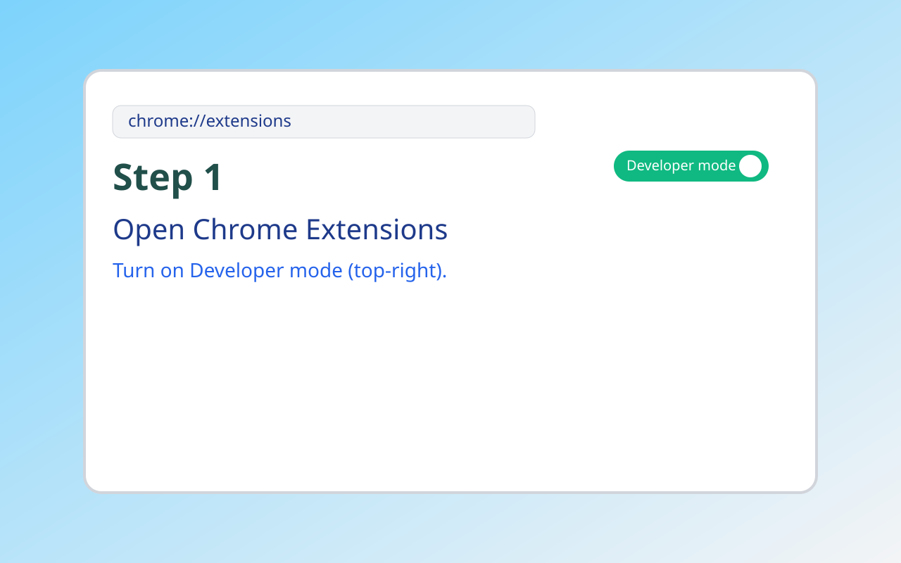
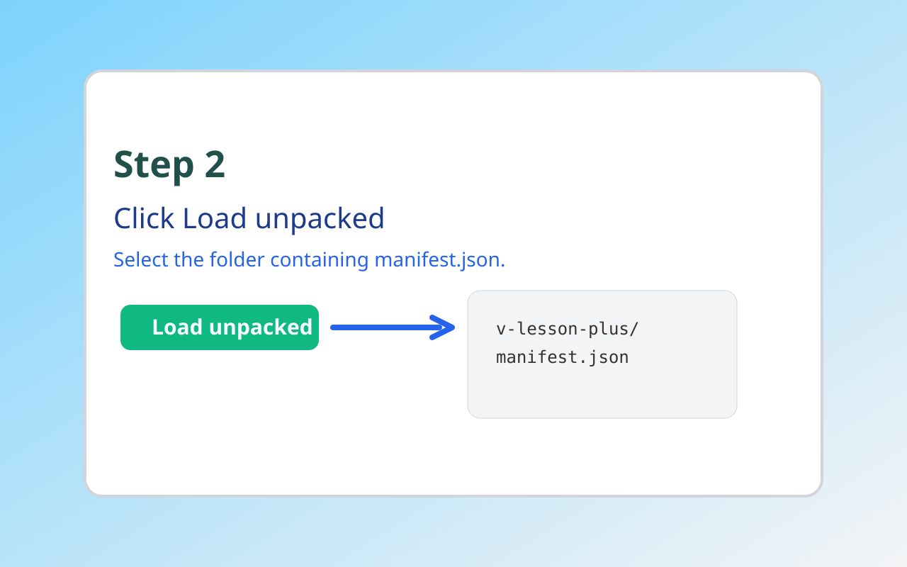
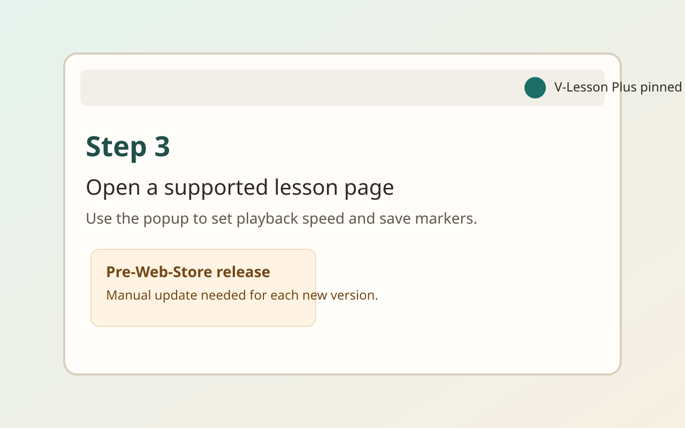

Google Chrome
Use a desktop version of Chrome. Manual extension loading is not available on mobile.
This page helps you install the extension manually from the latest GitHub release zip while it is not yet published on the Chrome Web Store.
Questa pagina ti aiuta a installare manualmente l'estensione dallo zip dell'ultima release GitHub, finche non sara pubblicata sul Chrome Web Store.
English
Before you start
Use a desktop version of Chrome. Manual extension loading is not available on mobile.
Download the latest release from GitHub. Do not use the source code zip.
You must enable Developer mode on chrome://extensions.
Step by step
Open the latest release page and download the zip package made for installation.
Unzip it into a folder that you keep on your computer (for example in Documents).
Go to chrome://extensions and enable Developer mode in the top-right corner.
Click Load unpacked and select the extracted extension folder that contains the manifest.json file.
Open a supported Uninettuno lesson page and pin V-Lesson Plus from the Chrome toolbar puzzle icon.
Visual guide



Italiano
Prima di iniziare
Usa Chrome su desktop. Il caricamento manuale delle estensioni non e disponibile su mobile.
Scarica l'ultima release da GitHub. Non usare lo zip del codice sorgente.
Devi attivare la modalita sviluppatore su chrome://extensions.
Passo per passo
Apri la pagina dell'ultima release e scarica il pacchetto zip preparato per l'installazione.
Estrai il contenuto in una cartella stabile del tuo computer (per esempio Documenti).
Vai su chrome://extensions e attiva la modalita sviluppatore in alto a destra.
Clicca Carica estensione non pacchettizzata e seleziona la cartella estratta che contiene il file manifest.json.
Apri una lezione supportata su Uninettuno e fissa V-Lesson Plus dalla barra strumenti di Chrome.
Guida visuale